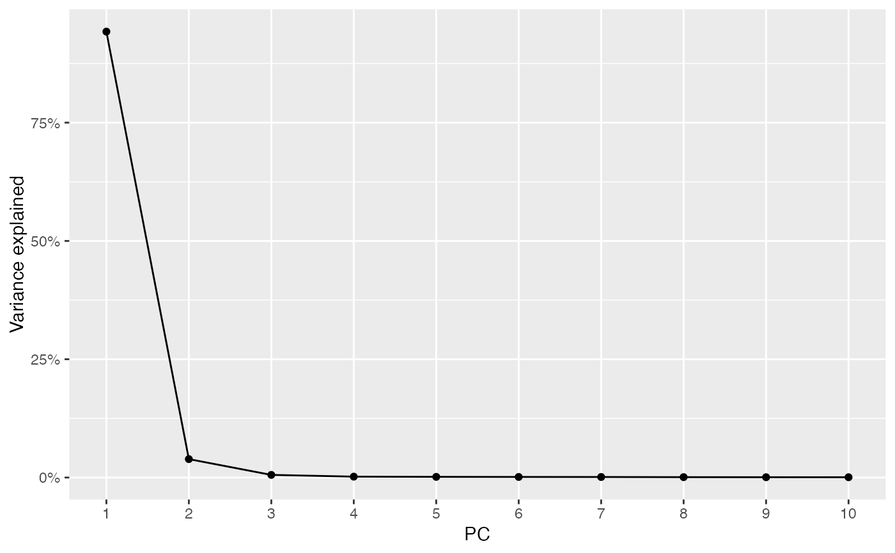

Apparently, there is no apparent way to plot the PC elbow plot other than extracting the variance explained attribute of the dimred slot, because even the OSCA book makes the elbow plot this way, which I find kind of cumbersome compared to Seurat. So I'm writing this function to make the elbow plot with SCE less cumbersome.
Usage
ElbowPlot(
sce,
ndims = 20,
nfnega = 0,
reduction = "PCA",
sample_id = "all",
facet = FALSE,
ncol = NULL
)Arguments
- sce
A
SingleCellExperimentobject, or anything that inherits fromSingleCellExperiment.- ndims
Number of components with positive eigenvalues, such as PCs in non-spatial PCA.
- nfnega
Number of nega eigenvalues and their eigenvectors to compute. These indicate negative spatial autocorrelation.
- reduction
Name of the dimension reduction to use. It must have an attribute called either "percentVar" or "eig" for eigenvalues. Defaults to "PCA".
- sample_id
Sample(s) in the SFE object whose cells/spots to use. Can be "all" to compute metric for all samples; the metric is computed separately for each sample.
- facet
Logical, whether to facet by samples when multiple samples are present. This is relevant when spatial PCA is run separately for each sample, which gives different results from running jointly for all samples.
- ncol
Number of columns of facets if facetting.
Examples
library(SFEData)
library(scater)
#> Loading required package: SingleCellExperiment
#> Loading required package: SummarizedExperiment
#> Loading required package: MatrixGenerics
#> Loading required package: matrixStats
#>
#> Attaching package: ‘MatrixGenerics’
#> The following objects are masked from ‘package:matrixStats’:
#>
#> colAlls, colAnyNAs, colAnys, colAvgsPerRowSet, colCollapse,
#> colCounts, colCummaxs, colCummins, colCumprods, colCumsums,
#> colDiffs, colIQRDiffs, colIQRs, colLogSumExps, colMadDiffs,
#> colMads, colMaxs, colMeans2, colMedians, colMins, colOrderStats,
#> colProds, colQuantiles, colRanges, colRanks, colSdDiffs, colSds,
#> colSums2, colTabulates, colVarDiffs, colVars, colWeightedMads,
#> colWeightedMeans, colWeightedMedians, colWeightedSds,
#> colWeightedVars, rowAlls, rowAnyNAs, rowAnys, rowAvgsPerColSet,
#> rowCollapse, rowCounts, rowCummaxs, rowCummins, rowCumprods,
#> rowCumsums, rowDiffs, rowIQRDiffs, rowIQRs, rowLogSumExps,
#> rowMadDiffs, rowMads, rowMaxs, rowMeans2, rowMedians, rowMins,
#> rowOrderStats, rowProds, rowQuantiles, rowRanges, rowRanks,
#> rowSdDiffs, rowSds, rowSums2, rowTabulates, rowVarDiffs, rowVars,
#> rowWeightedMads, rowWeightedMeans, rowWeightedMedians,
#> rowWeightedSds, rowWeightedVars
#> Loading required package: GenomicRanges
#> Loading required package: stats4
#> Loading required package: BiocGenerics
#>
#> Attaching package: ‘BiocGenerics’
#> The following objects are masked from ‘package:stats’:
#>
#> IQR, mad, sd, var, xtabs
#> The following objects are masked from ‘package:base’:
#>
#> Filter, Find, Map, Position, Reduce, anyDuplicated, aperm, append,
#> as.data.frame, basename, cbind, colnames, dirname, do.call,
#> duplicated, eval, evalq, get, grep, grepl, intersect, is.unsorted,
#> lapply, mapply, match, mget, order, paste, pmax, pmax.int, pmin,
#> pmin.int, rank, rbind, rownames, sapply, setdiff, sort, table,
#> tapply, union, unique, unsplit, which.max, which.min
#> Loading required package: S4Vectors
#>
#> Attaching package: ‘S4Vectors’
#> The following object is masked from ‘package:utils’:
#>
#> findMatches
#> The following objects are masked from ‘package:base’:
#>
#> I, expand.grid, unname
#> Loading required package: IRanges
#> Loading required package: GenomeInfoDb
#> Loading required package: Biobase
#> Welcome to Bioconductor
#>
#> Vignettes contain introductory material; view with
#> 'browseVignettes()'. To cite Bioconductor, see
#> 'citation("Biobase")', and for packages 'citation("pkgname")'.
#>
#> Attaching package: ‘Biobase’
#> The following object is masked from ‘package:MatrixGenerics’:
#>
#> rowMedians
#> The following objects are masked from ‘package:matrixStats’:
#>
#> anyMissing, rowMedians
#> Loading required package: scuttle
#> Loading required package: ggplot2
sfe <- McKellarMuscleData("small")
#> see ?SFEData and browseVignettes('SFEData') for documentation
#> downloading 1 resources
#> retrieving 1 resource
#> loading from cache
#> require(“SpatialFeatureExperiment”)
sfe <- runPCA(sfe, ncomponents = 10, exprs_values = "counts")
ElbowPlot(sfe, ndims = 10)
